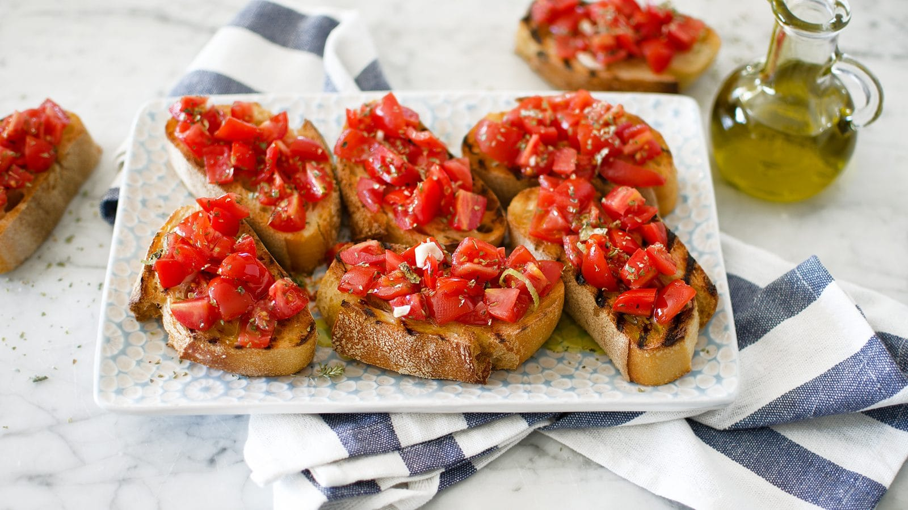

Bruschetta con Pomodoro

Description
A simple version of brushcetta, this toast with tomato can be served as a starter, snack or accompanimen
Ingredients
- 3-4 chopped tomatoes
- fresh basil leaves
- 8 crusty white bread slices
- 2-3 garlic cloves, cut in half
- 6 tablespoons extra virgin olive oil
- salt and ground pepper
Steps
- Put the copped tomatoes on a bowl, with their juice. Spice them with salt and pepper and mix them with basil. Let the rest for 10 minutes.
- Toast the bread until it's crunchy on both sides. While it's hot, rub wach toast with garlic on one side
- Place the toast on a plate, with the side with garlic up, drizzle with olive oil. With a spoon put above the chopped tomato and serve them immediately.